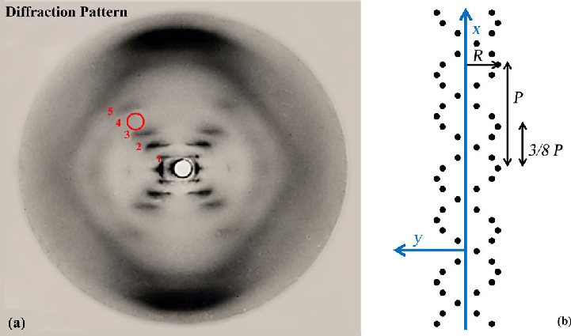
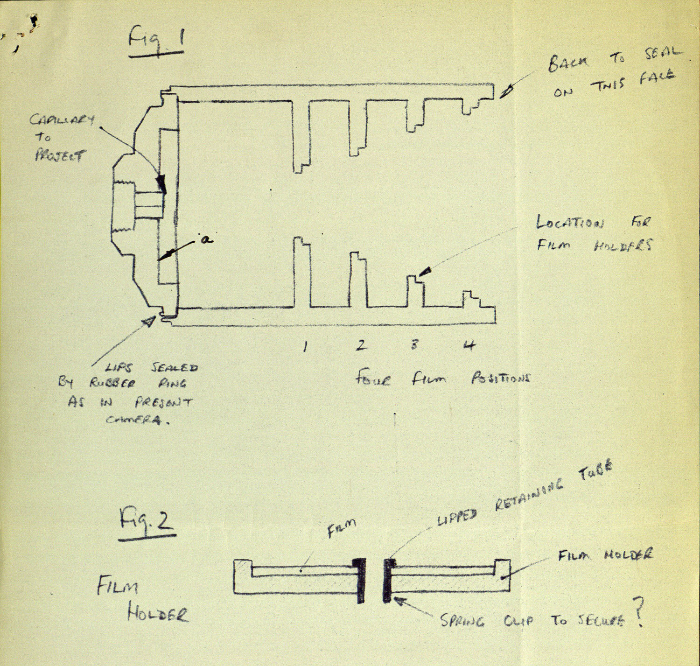
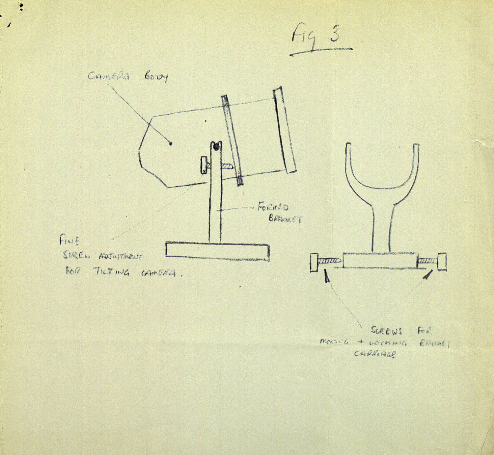

"What's the use of doing all this work if we don't get some fun out of this?"
Rosalind Franklin was the second child in a prominent Anglo-Jewish family. Her father was a
partner in multiple major family businesses, and both of her parents were active in charities.
Essentially, Franklin had the privilege to attend St. Paul's School for Girls, which emphasized
preparing students for careers in a time period where that wasn't common. From a young age,
she had a talent for languages, math and science (but apparently wasn't very good at singing).
Her mother was quoted saying that, "All her life, Rosalind knew exactly where she was going."
Franklin then entered Newnham College at Cambridge University in 1938.
1. College and War
"Science and everyday life cannot and should not be separated."
Franklin studied physics and chemistry at Newnham College. Her experience was shaped by the world war, stating
"Practically the whole of the [ Cavendish Lab] have disappeared. Biochemistry was almost entirely run by Germans and may not survive."
Of the war refugees Cambridfe took in, French scientist Adrienne Weill became one of Franklin's mentors and friends. Eventually,
she helped Franklin get a position in Jacques Mering's lab at the Laboratoire Central des Services Chimique de l'Etat in Paris.
There, she learned how to analyze carbons using x-ray crystallography (aka x-ray diffraction analysis) which is used for determining
atomic and molecular structures of crystals. This technique was key to most of her future research.
Some of Franklin's early work was detailing both graphitizing and non-graphitizing carbons. Her research became the basis for
developing carbon fibers and heat-resistant materials, earning her a very good reputation among coal chemists. Especially
considering the world war, her discoveries were important to the development of a way to slow reactions in nuclear power plants.
2. "Wronged Heroine"
"While the biological properties of deoxypentose nucleic acid suggest a molecular structure containing great complexity,
X-ray diffraction studies described here...show the basic molecular configuration has great simplicity."
In 1950, Franklin joined John T. Randall's BioPhysics Unit at King's College London to investigate DNA. In the beginning, a
misunderstanding between her and Mraice Wilkins fractured their work relationship and made it quite rocky. Wilkins was told that
he was to expect to work with Franklin, however Randall's communication to Franklin made her think she would work with a graduate
student named Raymond Gosling.
With Franklin's increasingly clear X-ray diffraction photos, she concluded that both a wet and dry form of DNA have two helices.
Her most well known photography is shown below, Photo 51, which depicts the helix structure of DNA.

Photo 51, from Franklin's work, which depicts the helix structure of DNA
Wilkins, without Franklin's permission, showed the photo to Francis Crick and James Watson, who are now credited
with discovering the helix structure of DNA. The two also gained insight from Franklin's unpublished research that
was submitted to the Medical Research Council. Ultimately, when Watson and Crick published their modal, they did not
acknowledge their debt to Franklin's work.
Wilkins, Crick, and Watson went on to win the nobel prize in 1962. By that time, Franklin had sadly passed away.
In 1968, Watson published a memoir and labeled Franklin as bad-tempered, arrogant, and someone who guarded her data from colleagues.
He also said she was not competent to interpret it. Reviewers and many of the people featured in his memoir, including Crick and Wilkins,
protested Watson's treatment of Franklin. The drama ends more positively for Franklin. As a rebuttal, her friend, Anne Sayre, published a
biography and made Franklin's role in the discovery better known.
3. Virus Research
"In my view, all that is necessary for faith is the belief that by doing our best we shall succeed in our aims: the improvement of mankind."
While many biographies and documentaries now give Franklin the role of a feminist martyr who was cheated of fame,
this also shrouds her other significant scientific research. After her work with DNA, Franklin began researching
the structure of plant viruses at Birkbeck College in London, particularly the tobacco mosaic virus.
One of her main discoveries was that the tobacco mosaic virus (TMV)'s RNA was embedded in the inner wall of its protein shell.
Because of the parallels between plant viruses and human ones, Franklin was able to explain the structure of the Polio, however
was unable to finish the study in her lifetime.


Diagrams of a camera to be constructed for Franklin's virus research,
undated [1955] From the Papers of Rosalind Franklin at the Churchill Archives Centre, FRKN 5/30
Franklin's expertise in virus structures was recognized by the royal institution,
who honored her with a request to construct large scale models of viruses for the 1958
Brussels World's Fair science exhibition.
In her last few years, she received many invitations for conferences around the world,
and it's highly likely that her research would have continued winning awards if she had
lived to continue it. Sadly, she died at the age of 37 from ovarian cancer.
4. That's a Wrap!
Throughout her career, Franklin published 19 articles on coals and carbons, 5 on DNA, and 21 on viruses, all of which have contributed greatly to their individual causes,
yet her name is not usually taught in with your average high school biology class.
There is still SO much about her to read online, and we've linked all our sources below if you'd like to check them out! Franklin is commemorated today by many hospitals
and is also remembered today by the Rosalind Franklin University of Medicine and Science in Illinois. We hope you learned something new with us today :).